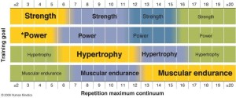
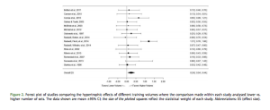
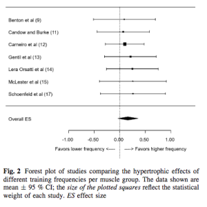
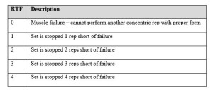
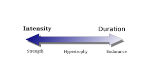

Progressive overload is a well-established principle for achieving continued progress in resistance training programs. In general terms, progressive overload can be defined as consistently challenging the neuromuscular system beyond its present capacity. It’s commonly accepted that this...
Brad Schoenfeld, Ph.D, C.S.C.S., is an internationally renowned fitness expert and widely regarded as one of the leading authorities on body composition training (muscle development and fat loss). He is a lifetime drug-free bodybuilder, and has won numerous natural bodybuilding titles.
Progressive overload is a well-established principle for achieving continued progress in resistance training programs. In general terms, progressive overload can be defined as consistently challenging the neuromuscular system beyond its present capacity. It’s commonly accepted that this requires an increase the amount of weight on the bar as one gets stronger to maintain the intensity of effort in a targeted loading zone (i.e., repetition range). However, little attention has been given to other methods of progressive overload, such as increasing the number of repetitions over time. Surprisingly, no study to date had endeavored to investigate the topic in a controlled fashion.
This study actually was the brainchild of my colleague, Jared Feather. Jared was planning to carry out this study as part of his doctoral work several years ago. He contacted me in 2019 about the possibility of conducting the study under my supervision at Lehman (he had intended to pursue his doctorate at AUT in New Zealand but collect data in the USA). Ultimately, Jared decided to forego his doctorate for the time being to work for Renaissance Periodization. That said, we discussed the importance of filling a gaping gap in the literature and concluded that the topic needed to be investigated regardless. Thus, I agreed to take on the project and carry out data collection in my lab.
In Spring 2020, we set out to conduct the study. We were about halfway finished with data collection when Covid-19 hit; by mid-March, we had to cease all research-related activities. Our research team had devoted over 500 hours of time to the study, but sadly it was all for naught; none of the data could be used.
Despite this setback, we were determined to complete the study.
Fast forward to Fall, 2021. My master’s degree student, Daniel Plotkin, expressed his interest in taking on the study for his thesis, with support from our terrific team of research assistants at Lehman. (Side note: Daniel has since graduated our program and is now pursuing his PhD under the mentorship of Dr. Mike Roberts at the University of Auburn). Fortunately, there were no issues with Covid this time around, We finalized data collection and statistical analysis in Spring 2022, and received official word of acceptance of our manuscript from PeerJ in September 2022.
If you want to delve into the technical aspects of the methods and findings, give the paper a read; it’s open access. For those who’d prefer a consumer-friendly synopsis, here’s the scoop…
What We Did
We randomized a cohort of young men and women with at least 1 year of consistent resistance training experience to perform a lower body training program where they either aimed to increase load while keeping repetitions constant or to increase repetitions while keeping load constant. The training protocol itself was otherwise identical between groups, consisting of 4 sets of the back squat, leg extension, straight-leg calf raise and seated calf raise performed twice per week. Training lasted 8 weeks, with testing performed pre- and post-study. To evaluate muscular adaptations, we carried out a battery of assessments including changes in muscle thickness of the quads and calves via B-mode ultrasound, total and regional body composition via multi-frequency bioelectrical impedance analysis, and 1RM in the Smith machine squat.
What We Found
Overall, results for most measures were quite similar between groups. Rectus femoris growth modestly favored the group that progressed by adding reps; hypertrophy of the other muscles did not show appreciable differences between conditions (see image below). Although strength increases slightly favored the group that progressed by increasing load, the range of effects spanned from relatively modest negative effects to appreciable positive effects and thus are of questionable practical meaningfulness. Other tests of local muscular endurance and power showed no benefit to one progression model compared to the other.
The results of our study challenge the generally accepted theory that progression must be carried out through increases in load. In fact, increasing repetitions at the same load showed similar gains in hypertrophy in most of the muscles we assessed, and there was even a modest benefit for hypertrophy of the rectus femoris. While strength increases slightly favored the group that increased load, the results showed a wide spread of variance that calls into question their practical significance. When considering the findings as a whole, both progression models were effective in enhancing muscular adaptations in a cohort of trained lifters and can be considered viable programming options.
Now before jumping to absolute conclusions, it’s important to note that the study only lasted 8 weeks. Although this is typical of training mesocycles, particularly for those of more advanced lifters, we cannot necessarily extrapolate results over longer time periods. Thus, our findings do not necessarily mean that a lifter can continue to simply increase reps forever without adding load to the bar at some point. Evidence suggests that training with very high rep ranges (>40 or so per set) tends to impair increases in hypertrophy. This would seem to be most relevant to those with less resistance training experience, as the ability to increase reps to such an extent is diminished in well-trained lifters. Hence, it’s conceivable that more advanced lifters can continue progress by adding repetitions for longer periods of time; this hypothesis warrants further study.
I’d also note that our protocol targeted a moderate repetition range for the initial training loads (10RM). It is well-documented that maximal strength gains are achieved with the use of heavy loads (at or near 1RM). Thus, these results are not necessarily applicable to strength athletes (e.g., powerlifters) or those who are most concerned about optimizing dynamic strength. In these cases, some type of load progression seemingly would be necessary to maintain training close to maximal loads.
Take-Home Conclusions
Overall, our study suggests that, from a hypertrophy standpoint, progressive overload can be made by altering load, repetitions, or conceivably a combination of the two, at least over the course of typical mesocycles (i.e., 8-week training block). Given that rectus femoris growth favored the repetitions groups, it is conceivable that progressing reps may be favorable in some contexts over others.
On a more general level, the mode of progression does not have to be an either/or choice. It may be best to employ a variety of progression strategies over time to ultimately elicit optimal improvements in muscular adaptations. In this regard, variety may be the spice of gainz.
Below is an excerpt from my book, Strong & Sculpted that discusses my current approach to warming up prior to resistance training. I neglected to include a chapter on the topic in my book, M.A.X. Muscle Plan so for those following this program, the same info applies.
Warm-Up
To prepare your body for the demands of intense exercise, you should warm up prior to your lifting session. The warm-up contains two basic components: a general warm-up and a specific warm-up. Here’s what you need to know about each component for a safe, effective workout.
General Warm-Up
The general warm-up is a brief bout of low-intensity, large muscle–group, aerobic-type exercise. The objective is to elevate your core temperature and increase blood flow, which in turn enhances the speed of nerve impulses, increases nutrient delivery to working muscles and the removal of waste by-products, and facilitates oxygen release from hemoglobin and myoglobin.
A direct correlation exists between muscle temperature and exercise performance: when a muscle is warm, it can achieve a better contraction. As a rule, the higher a muscle’s temperature is (within a safe physiological range), the better its contractility. And because better contractility translates into greater force production, you’ll ultimately achieve better muscular development.
What’s more, an elevated core temperature diminishes a joint’s resistance to flow (viscosity). This is accomplished via the uptake of synovial fluid, which is secreted from the synovial membrane to lubricate the joint. The net effect is an increase in range of motion and improved joint-related resiliency. Better yet, these factors combine to reduce the risk of a training-related injury.
Suffice it to say that the general warm-up is an important part of a workout.
Virtually any cardiorespiratory activity can be used for the general warm-up. Exercises on equipment such as stationary bikes, stair climbers, and treadmills are fine choices, as are most calisthenic-type exercises (e.g., jumping jacks, burpees). Choose whatever activity you desire as long as the basic objective is met.
The intensity for the general warm-up should be low. To estimate intensity of training, I like to use a rating of perceived exertion (RPE) scale. My preference is the category-ratio RPE scale, which grades perceived effort on a scale from 0 to 10 (0 is lying on your couch, and 10 is an all-out sprint). Aim for an RPE of around 5, which for most people is a moderate walk or slow jog. You can use the talk test as an intensity gauge. With this method, you base intensity on your ability to carry on a conversation; if you have to pause to take a breath while speaking a sentence, you’re working too hard.
Five to ten minutes is all you need for the general warm-up—just enough to break a light sweat. Your resources should not be taxed, nor should you feel tired or out of breath either during or after performance. If so, cut back on the intensity. Remember, the goal here is merely to warm your body tissues and accelerate blood flow—not to achieve cardiorespiratory benefits or reduce body fat.
Specific Warm-Up
The specific warm-up can be considered an extension of the general warm-up. By using exercises that are similar to the activities in the workout, the specific warm-up enhances neuromuscular efficiency for the exercise you are about to perform. In essence, your body gets to rehearse the movements before you perform them at a high level of intensity, translating into better performance during your working sets.
To optimize transfer of training, the exercises in the specific warm-up should mimic the movements in the workout as closely as possible. For example, if you are going to perform a bench press, the specific warm-up would ideally include light sets of bench presses. A viable alternative would be to perform push-ups because the movement pattern is similar to that of a bench press, although the specificity, and thus transfer, would not be as great as with light sets of the given movement. Always stop specific warm-up sets well short of fatigue. The object is not to fatigue your muscles, but rather to get a feel for the exercise so that you’re physically and mentally prepared for intense training.
The specific warm-up is particularly important when training in low-repetition ranges (~ five reps or fewer). I recommend at least a couple of specific warm-up sets per exercise during low-rep training. As a general rule, the first set should be performed at ~40 to 50 percent of 1RM; and the second set, at ~60 to 70 percent of 1RM. Six to eight reps is all you need in these sets—any more is superfluous and potentially counterproductive. Following the specific warm-up, you should be ready and able to plow into your working sets.
The need for specific warm-up sets in medium- to high-rep-range training remains questionable. I recently collaborated on a study that investigated the effects of a warm-up on the ability to carry out repetitions to failure at 80 percent of 1RM (a weight that allows performance of about eight reps) in the squat, bench press, and arm curl (Ribeiro et al., 2014). The verdict: Warming up showed no beneficial effects on the number of repetitions performed in medium- to high-rep-range training nor in a measure called the fatigue index, which is a formula that assesses the decline in the number of repetitions across the first and last sets of each exercise.
At face value these results suggest that warming up is pretty much useless prior to submaximal resistance training. Despite the currently held belief that a specific warm-up enhances exercise performance, no benefits were seen when compared to no warm-up at all. Intuitively, this seems to make sense given that the initial repetitions of a submaximal lifts are in effect their own specific warm-up, and increasing core temperature might be superfluous from a performance standpoint when multiple reps are performed.
It should be noted, however, that we found a slight advantage to performing a specific warm-up prior to the squat (although results did not rise to statistical significance); the specific warm-up prior to the biceps curl seemed to be somewhat detrimental. Thus, more complex movement patterns seem to benefit from the practice effect of a specific warm-up, although this would be of no value prior to simple exercises.
Taking the evidence into account, here’s my recommendation: When performing medium-rep-range work (8 to 12 reps per set), perform a specific warm-up prior to multijoint free weight exercises. One set at about 50 percent of 1RM is all you need to obtain any potential benefits.
Specific warm-up sets are not necessary when training with high reps (15+ reps per set). In this instance, because you’re already using light weights, the initial repetitions of each working set serve as rehearsal reps. What’s more, performance of warm-up sets is counterproductive to the goal of maximizing training density to bring about desired metabolic adaptations.
What About Stretching?
Static stretching is commonly included as part of a prelifting warm-up. This method of flexibility training involves moving a joint through its range of motion to the point where you feel slight discomfort, and then holding the position for a period of time (generally about 30 seconds). Most protocols involve performing several sets of static holds and then moving on to stretches for other muscles. It’s commonly believed that the addition of stretches to a warm-up further reduces injury risk while enhancing physical performance.
In recent years, however, the benefits of preexercise static stretching have come under scrutiny. A large body of research shows that the practice does not decrease injury risk (Thacker et al., 2004). Yes, improving flexibility can conceivably help in injury prevention. Tight muscles have been implicated as a cause of training-related injury, and improving flexibility can reduce this possibility. Because a stretching exercise improves range of motion, including it in an exercise program can enhance overall workout safety. However, the benefits are not specific to stretching prior to training. All that matters is achieving adequate range of motion to properly carry out exercise performance.
The most important consideration here is to make sure your muscles are warm before performing static stretches. This reduces joint viscosity, ensuring that muscles and connective tissue are sufficiently prepped to endure passive or active lengthening.
So you might be thinking, Why not include some basic stretches after the general warm-up? After all, your core temperature is elevated and joint viscosity is reduced. What’s the harm, right?
Interestingly, evidence shows that static stretching performed before a workout can have a detrimental impact on exercise performance. This is most applicable to activities requiring high force output, such as heavy resistance training. The primary theory proposed to account for these performance decrements is a decrease in musculotendinous stiffness. The musculotendinous unit (the muscle and its associated tendons) is responsible for generating force to carry out movement. Like an overstretched rubber band, the musculotendinous unit with increased laxity following stretching impairs force transmission. The upshot is a reduced capacity to lift a given load.
However, caution needs to be used when applying this research to a lifting session. First, most of the studies in question used excessive stretching protocols, in some cases upwards of 30 minutes stretching a single joint! Most preworkout stretching routines involve only a few minutes per joint, and it’s highly questionable whether such brief stretching bouts have any performance-related detriments. Moreover, the vast majority of research on the topic is specific to high- strength and high-power activities. Whether negative effects are associated when training with medium- to high-rep schemes remains speculative.
Given the uncertainty of evidence, you’re best off performing static stretches immediately after your workout. Your body is already warm from engaging in intense exercise, and it generally feels good to cool down by elongating muscles that have been repeatedly contracted. Some research even shows that postworkout stretching may alleviate delayed-onset muscle soreness (see the sidebar What Causes Muscle Soreness After a Workout?), although the extent of the reduction probably isn’t all that meaningful (Henschke & Lin, 2011).
If you want to include some flexibility work prior to lifting, consider dynamic stretches: slow, controlled movements taken through their full range of motion. Examples are arm swings, shoulder circles, high steps, and hip twists. Choose dynamic stretches that are specific to the joint actions being trained in your workout. Perform several sets for each dynamic stretch, attempting to move the body segment farther and farther in a comfortable range with each set.
Contrary to popular belief, you don’t necessarily have to include a stretching component in your regular routine for general health and wellness. Increased flexibility results in decreased joint stability. Being too flexible, therefore, actually increases injury risk. Thus, stretch only those joints that are tight, and avoid any additional flexibility exercise for those that already have adequate range of motion to carry out your required activities of daily living.
Moreover, it’s important to note that resistance training in itself actually improves flexibility. Provided that you train through a complete range of motion, multiset lifting protocols produce similar increases in flexibility to those seen with static stretching routines (Morton et al., 2011). In essence, resistance training is an active form of flexibility training whereby a muscle is contracted and then immediately lengthened. When performed on a regular basis, it can keep you mobile and limber. We can therefore put to rest the myth that lifting slows you down and binds you up!
Dating back to my early years as a personal trainer in the mid-90’s, I began to become intrigued by the concept of “loading zones” whereby different rep ranges purportedly could bring about differential effects on muscular adaptations. Prevailing wisdom at the time was that heavy loads (1-5 RM) promote maximal strength gains, moderate loads (6-12 RM) elicit maximal increases in muscle mass, and light loads (15+ RM) produce the greatest improvements in local muscular endurance. This concept, discussed extensively in exercise science texts, was termed the “strength-endurance continuum” (see the image below) although direct research on the topic was limited. 
The topic of rep ranges was so intriguing to me that I ultimately made it a focus of my doctoral work. Several years ago I published the data collected in accordance with my dissertation study. In brief, the study looked at muscular adaptations in a “bodybuilding-type” routine versus a “powerlifting-type” routine in resistance-trained men when the routines were equated for volume load. Consistent with the “strength-endurance continuum” concept, the study found that the powerlifting-type routine produced the greatest strength increases. Contrary to prevailing wisdom, however, both routines produced similar increases in hypertrophy of the biceps brachii. You can read my write-up of the routine in this blog post.
Importantly, the findings of that study are specific to the respective routines being equated for volume load. While this provides interesting insights on the topic, it is impractical to carry out long-term training with very heavy loads at the volumes used in that study (in fact, the majority of subjects in the powerlifting-type group displayed clear signs of overtraining by study’s end). So the question arises as to whether results would differ if an equal number of sets were performed between heavy and moderate loads?
What We Did
Nineteen college-aged men were recruited to participate in the study. All subjects had at least one year of resistance training experience lifting at least three times per week. Subjects were randomized to either a group that trained in a heavy loading range of 2-4 repetitions per set (HEAVY) or a group that trained in a moderate loading range of 8-12 repetitions per set (MODERATE). All other aspects of the subjects’ program were kept constant between groups. The training protocol consisted of seven exercises that worked all the major muscles of the body each session, with three sets performed per exercise. Training was carried out on three non-consecutive days per week for eight weeks. Subjects were instructed to maintain their normal daily nutritional intake and no differences in either calories or macronutrient consumption was found between groups over the course of the study.
What We Measured
We tested hypertrophy of the elbow flexors, elbow extensors, and quads using b-mode ultrasound. Maximal strength was assessed in the squat and bench press via 1 repetition maximum (RM) testing. Upper body local muscular endurance was determined by assessing the subject’s initial 1RM in the bench press for as many repetitions as possible to muscular failure.
What We Found
The infographic to the left (courtesy of Thomas Coughlin) illustrates the results of the study. In general, overall muscle growth was greater for MODERATE compared to HEAVY. Increases in thickness of the elbow flexors (i.e. biceps brachii and brachialis) modestly favored the use of moderate reps (~5% vs ~3% for MODERATE vs HEAVY, respectively) while gains in the quads substantially favored the moderate rep group (10% vs 4% for MODERATE vs HEAVY, respectively). Interestingly, growth of the triceps was similar between groups.
On the other hand, strength gains were decidedly greater when training with heavy loads. This was seen for improvements in both the 1RM squat (29% versus 16%) and bench press (14% vs 10%), which favored HEAVY compared to MODERATE. Muscle endurance increases were similar between rep ranges.
What are the Practical Implications
The study provides evidence that training with heavy loads helps to maximize muscle strength and training with moderate loads promotes greater increases in muscle mass. Importantly, these findings are specific to routines where the number of sets are equated. At face value, this is consistent with the “strength-endurance continuum” and supports what gym bro’s have been preaching for years in regards to rep ranges.
However, when the results are taken into account with my previous study on the topic that equated volume load, an interesting hypothesis emerges. Since strength gains were greater with heavy loads in both studies, it can be concluded that low-rep training is best for maximizing strength regardless of volume load. On the other hand, since the previous study showed no differences in hypertrophy between conditions when volume load was equated, it can be inferred that volume load is a greater driver of muscle growth irrespective of the rep range. In other words, strength is maximized even with lower training volumes provided heavy loads are used, but higher volumes are needed to maximize gains in size whether you train with moderate or heavy weights.
The study had several limitations including a relatively small sample size, the use of a single-site measurement for muscle growth on each of the respective muscles, and possible confounding from the “novelty factor” (i.e. virtually all the subjects trained with moderate loads, so it is possible that the novel stimulus for those in the heavy load group might have impacted results). These issues must be taken into account when attempting to draw evidence-based conclusions. Most importantly, one study is never the be-all-end-all when it comes to answering questions on an applied science topic. Rather, each study should be considered a piece in a puzzle that lends support to a given theory. The practical implications of programming loading zones will become increasingly clear as we continue to build on this line of research. For now, though, the evidence suggests to train heavy if your goal is maximal strength, and to focus on accumulating volume for maximal gains in muscle mass.
The question as to how much strength training volume is needed to maximize muscular gains has been an ongoing source of debate, both in scientific circles as well as the realm of social media. Some claim that a very low volume approach is all that’s required while others subscribe to the belief that marathon training sessions are an absolute necessity.
Who’s right? Well…
Back in 2010, my colleague James Krieger carried out a meta-analysis to provide evidence-based clarity on the topic. In case you’re not aware, a meta-analysis pools data from all relevant studies on a given subject to provide greater statistical power and thus enhance the ability to draw practical inferences from the literature. In short, the analysis showed that performance of multiple sets was associated with a 40% greater hypertrophy-related effect size (a statistical measure of the meaningfulness of results) compared to single-set training.
While this paper provided good evidence in support of higher training volumes, there were some issues with the analysis. For one, James only looked at sets per muscle per workout; a potentially more important marker in determining the hypertrophic response is the weekly volume per muscle group. Moreover, only 8 studies qualified for inclusion in James’ analysis at the time, and only 3 of these studies used direct site-specific measures of muscle growth (i.e. MRI, ultrasound, etc).
Since publication of James’ meta-analysis, a number of additional studies have been published in the peer-reviewed literature. Given this info and in an attempt to resolve previous issues, James and I decided it was appropriate to carry out a follow-up meta-analysis that encompassed all the evidence to date. We recruited our colleague Dan Ogborn to collaborate on the project, and centered our focus on the effects of weekly sets per muscle group on changes in muscle mass. I’m happy to report the paper was recently published in the Journal of Sport Sciences.
Here’s the lowdown:
What We Did
A literature search was conducted to locate all studies that directly compared measures of hypertrophy between higher versus lower resistance training volumes with all other variables equated between conditions. Only human studies with healthy subjects that had a minimum duration of six weeks were considered for inclusion.
What We Found 
A total of 15 studies were identified that met inclusion criteria. We ran multiple comparisons to assess the topic from different perspectives. First we evaluated the effects of volume within each study and found that higher volumes were associated with a 3.9% greater average increase compared to lower volumes; the findings were statistically significant (i.e. high probability that they weren’t due to chance alone). As shown in the accompanying forest plot, only 1 of the 15 studies showed a favorable effect for lower volume training, emphasizing the high probability that greater volumes produce greater increases in muscle growth.
We next looked at the effects of volume on a two-level categorical basis, splitting the data into performing less than 9 sets versus 9 sets or more. In this model, the lower volume condition was associated with a gain of 5.8% while the higher volume condition produced a gain of 8.2%. Although the results did not reach statistical significance in this model, the probability of an effect was nevertheless very high (p = 0.076).
Finally, we employed a three-level categorical analysis whereby volume was stratified into less than 5 weekly sets per muscle, 5 to 9 weekly sets per muscle, and 10+ sets per muscle. Here we found a graded dose response whereby gains in muscle progressively increased across each category from 5.4% to 6.6% to 9.8%, respectively. As with the two-level model, results did not quite reach significance, but a high level of confidence can be inferred that results were not due to chance alone (p = 0.074).
What are the Practical Implications
There are several important take-aways from our meta-analysis. First off, a low volume approach can build appreciable muscle. Performing less than 5 weekly sets per muscle produced an average hypertrophic gain of 5.4%. Not too shabby. So if you are time-pressed and not concerned about achieving the upper limits of your muscular potential, it should be heartening to know that you can build an impressive physique without spending a lot of time in the gym.
That said, there is a clear dose-response relationship between volume and hypertrophy. In the three way categorical model, performing 10+ sets produced almost twice the gains as performing less than 5 weekly sets per muscle (9.8% vs 5.4%). Performing 10+ weekly sets per muscle was also associated with a markedly greater increase in muscle mass compared to 5-9 sets (9.8% vs 6.6%). Thus, a higher volume approach is clearly necessary if you want to maximize muscular gains.
So how many sets should you perform to maximize hypertrophy? That remains to be determined. While 10+ weekly sets per muscle was established as a minimum threshold, we were not able to determine an upper threshold where optimal muscle growth is achieved. The effects of volume on hypertrophy undoubtedly follows an inverted-U curve, whereby results progressively increase up to a certain point, then level off, and then ultimately decrease at exceedingly high volumes due to the negative consequences of overtraining. Moreover, the adaptive response to volume will be specific to the individual, with some lifters able to benefit from higher volumes more so than others. Thus, experimentation is needed to tweak the number of sets you perform based on how you respond.
It may well be that periodized approach is best here. Given that repeatedly training with high volumes can lead to an overtrained state, cycling from lower to higher volume blocks that culminate in a brief period of functional overreaching would hypothetically allow for sustained muscular gains over time while staving off the potential for overtraining. It’s a strategy that I’ve employed with good success when working with clients.
Interestingly, a previous study indicated that higher volumes were beneficial for the lower but not upper body musculature. A follow-up study by the same research group similarly found that satellite cell activation was dependent on volume only in the lower body musculature. However, our pooled analysis did not support these findings. Rather, volume was equally important irrespective of body region, with higher volumes translating into greater increases in size.
A limitation of the analysis is that the findings are largely specific to the muscles of the upper arms and frontal thighs; there simply isn’t enough evidence to generalize results to other body regions (i.e. muscles of the back, shoulders, chest, calves, etc). What’s more, the vast majority of studies were carried out in untrained subjects; only two studies used resistance-trained individuals. It has been speculated that increasingly higher volumes are necessary as one gains lifting experience, but more research is needed to support such a conclusion. My lab currently has a large scale study in development to investigate the topic in well-trained men that should help to fill in the gaps in the current literature. Stay tuned…
Training frequency is one of the most hotly debated topics in the field of resistance training. While traditionally the term frequency has been associated with how many days a week you work out, a potentially more important variable is the number of times a given muscle group is trained per week.
The internet is littered with varying opinions as to optimal training frequency for maximizing muscle hypertrophy. Some preach the typical bodybuilding “bro-split” which involves training each muscle group once a week with high volumes per session, whereas others propose training each muscle as many as 6 days a week with lower per-session volumes is the best way to get jacked. Problem is, all these opinions are largely anecdotal with limited scientific support. Seems hard to believe, but there hasn’t been a whole lot of research on the topic, and the studies that have been carried out have employed a variety of methodological designs that makes it difficult to sort out a conclusion at face value.
In an attempt to achieve better clarity on the effects of frequency on muscle growth, I recently collaborated on a meta-analysis with colleagues James Krieger and Dan Ogborn. In case you’re not aware, a meta-analysis pools data from all studies on a given subject to provide greater statistical power and thus enhance the ability to draw practical inferences.
Here’s the lowdown:
What We Did
A literature search was conducted to locate all studies that directly compared measures of hypertrophy for different weekly lifting frequencies using traditional resistance training programs. Only human studies with healthy subjects were considered, and study duration had to last a minimum of four weeks.
A total of 10 studies were identified that met inclusion criteria. 7 of the studies, comprising a total of 200 subjects, investigated muscle group frequency while the other 3 studies assessed training session frequency when the number of weekly times working a muscle group was matched.
What We Found 
We first looked at the effects of frequency as a binary predictor. Simply stated, this means that the higher frequency condition in a study was compared to the lower frequency condition, irrespective of how many days a week the muscle group was trained. Thus, a 2 day-a-week vs 1 day-a-week was treated the same as a 3 day-a-week vs 1 day-a-week. In this model, there was a clear benefit for higher frequency training of a muscle group. The effect size – a measure of the meaningfulness of results – was 48% greater for the higher frequency conditions (0.49 vs 0.30, respectively), translating into an average hypertrophy increase of 6.8% versus 3.7% for higher vs lower frequencies, respectively. Moreover, as shown in the accompanying chart, every study on the topic showed a benefit to training with higher frequencies.
Due to an insufficient number of studies looking at training 1, 2, or 3 days per week, we were unable to produce reliable estimates on the hypertrophic effects of specific lifting frequencies. Similarly, with only 3 studies looking at training session frequency when groups were matched for frequency of training per muscle group, data was insufficient to produce reliable estimates for effects on hypertrophy.
What are the Practical Implications
The primary take-away from the meta-analysis is that there appears to be a pretty clear benefit to training muscle groups with higher weekly frequencies. At the very least, the study shows that training a minimum of 2 days a week is needed to maximize muscle growth. Unfortunately there simply aren’t enough studies to make more concrete determinations as to the precise number of times that a muscle should be trained each week for optimal growth. Nevertheless, training a muscle just once a week was shown to promote substantial muscle growth. So the claims made by some that the typical bro-split only works for juiced-up bodybuilders are patently false.
It’s important to realize that research studies are relatively short-term, usually lasting 6 to 12 weeks. Problem is, you can’t necessarily extrapolate that results found would continue over time. This is particularly true of a variable such as frequency, as high training frequencies may ultimately lead to an overtrained state and thus have a negative impact on muscle development. Given such a possibility, it may be prudent to periodize training frequency, varying the number of times a muscle is trained each week in a systematic fashion. It also indicates a potential benefit to instituting regular deload periods, where a week of reduced frequency, volume, and/or intensity is strategically integrated into your program every month or so to facilitate recuperation and regeneration.
Importantly, remember that research reports the average responses, but there are generally large inter-individual differences in results. Some may respond best to higher frequencies while others might do better with lower frequencies. Use research to guide your programming, then experiment to see what works best for you.
Proper manipulation of program variables is essential for maximizing the hypertrophic response to resistance training. Variations in volume, loading and rest intervals all have been shown to impact muscular adaptations.
One variable that hasn’t received as much attention is lifting tempo – i.e. how fast you perform a repetition. When you’re using very heavy loads this is moot; although you’ll necessarily need to try to move the weight quickly, the actual concentric speed will be fairly slow. To illustrate this point, a study by Mookerjee and Ratamess found that the first concentric repetition of a 5RM bench press took 1.2 seconds to complete while the fourth and fifth repetitions took 2.5 and 3.3 seconds, respectively. These findings occurred despite subjects being instructed to perform the reps explosively.
When the loads are lightened, however, you have a lot more control over lifting cadence. A wide range of volitional tempos are possible depending on the magnitude of load. Recommendations on the topic are highly disparate depending on who you listen to. Some fitness pros advocate explosive lifts while others recommend slowing tempo down to where a single repetition takes 45 seconds to complete as seen in this video
In an effort to synthesize the evidence and gain clarity on the issue, I collaborated on a meta-analysis with uber-pros James Krieger and Dan Ogborn. The study titled, Effect of repetition duration during resistance training on muscle hypertrophy: a systematic review and meta-analysis was recently published in the journal, Sports Medicine. In case you’re not aware, a meta-analysis pools data from all studies on a given topic and then statistically quantifies the results to provide a gauge of how meaningful the differences are between conditions.
Here’s the scoop.
What We Did
An extensive search of the literature was carried out for randomized controlled trials that directly compared the effects of different training tempos on muscle hypertrophy in healthy individuals. Studies had to last a minimum of 6 weeks and both groups had to perform reps to the point of momentary concentric muscle failure. A total of 8 studies comprising 204 total subjects ultimately met inclusion criteria – a surprisingly low number for such an important topic.
What We Found
There was no difference in hypertrophy between lifting durations of 2 to 6 seconds when using dynamic constant external resistance (typical free weights and machines). A single study using isokinetic dynamometry showed that durations of a half-second up to 8 seconds produced similar hypertrophy, although the generalizability of this study to traditional training methods is somewhat questionable.
There does seem to be a threshold as to how slow you can go, as evidence suggests that “superslow” lifting (i.e. durations above 10 seconds) is suboptimal for hypertrophy. The research on this topic is limited thereby making it difficult to draw firm conclusions, but a recent study found that a traditional speed group increased muscle cross sectional area by 39% compared to only 11% in a group performing reps at a tempo of 10 seconds up, 4 seconds down. These results held true despite an almost five-fold greater time-under-tension for the superslow group. A follow-up study by the same lab showed satellite cell content and myonuclear domain – important components in the ability to increase muscle mass over time – were substantially greater with traditional compared to superslow training. These findings are consistent with research showing that muscle activation is reduced up to 36% when training at very slow speeds (5 seconds concentric and eccentric). And since maximal hypertrophy is predicated on recruiting the full spectrum of muscle fibers and keeping them stimulated for a sufficient period of time, it is logical to speculate that training in a superslow fashion is inferior if your goal is to optimize muscular gains.
What are the Practical Implications
Current research indicates that a wide range of lifting durations can be used to maximize hypertrophy. Given the limited number of studies and their diverse methodology, however, the topic is far from settled. Based on the evidence it would seem prudent to take no more than about 3 seconds on the concentric portion of the movement. Beyond this cadence, you’d need to reduce the load to a point where it could negatively impact the ability to fully stimulate the highest threshold motor units. Eccentric actions should be performed so that the load is controlled against the forces of gravity; simply letting the weight drop fails to provide sufficient muscular tension for the majority of the action (and it also increases the risk of joint-related injury). As with concentric actions, there does not seem to be any advantage to slowing the movement down to more than about 3 seconds and it is possible that doing so might actually be detrimental to growth. I’d add that the reps should be carried out with sufficient control so that a mind-muscle connection can be established with the target musculature – the current body of evidence suggests that such a strategy is beneficial for maximizing muscle activation, which may in turn lead to greater gains.
I’ll note that the above recommendations are rather liberal, giving the benefit of doubt to somewhat slower tempos. My general feeling is that the concentric portion of a rep should be around 1-2 seconds – the most important thing here is to control of the weight by using an internal focus to visualize the target muscle as you lift. Although results of our meta-analysis showed no “statistically significant” differences in tempos up to 3 secs concentric, data from Tanimoto et al show a substantially greater effect size (a measure of the “meaningfulness” of results) for muscle growth favoring traditional (1 sec on concentric and eccentric – effect size 1.08) vs slower (3 secs concentric and eccentric – effect size 0.74) lifting cadences. It therefore would seem a slightly faster tempo is warranted, at least on multi-joint exercises
Could combining different repetition durations potentially enhance the hypertrophic response to training? It’s impossible to say as no study to date has investigated this possibility. As such, the best advice therefore is to experiment for yourself and see if this may spur additional growth. Remember: the best research often comes from what is learned in the trenches!
Current resistance training guidelines recommend long rest intervals (i.e. 3 minutes) to maximize muscle strength. Alternatively, short rest intervals of around 1 minute are generally recommended for maximizing muscle growth. This is based on the premise that higher metabolic stress associated with limiting rest between sets will promote a greater muscle-building stimulus. Some have specifically pointed to acute post-exercise increases in anabolic hormones as a primary driving factor in the process.
Back in 2014, I co-authored a review paper on the topic with my colleague Menno Henselmans that was published in the journal Sports Medicine. After a thorough scrutiny of the literature, we determined that there was little basis for the claim that shorter rest intervals was beneficial to hypertrophy. As I discussed in this blog post, It would appear from current evidence that you can self-select a rest period that allows you to exert the needed effort into your next set without compromising muscular gains. That said, our recommendations were limited by a dearth of controlled studies on the topic. Moreover, no study had investigated the generally accepted guidelines of taking 3 minutes rest for strength gains and 1 minute for hypertrophy in resistance-trained individuals.
Until now…
I recently collaborated on a just-published study that investigated the effect of rest intervals on strength and hypertrophy. Here’s the scoop:
What We Did
A cohort of 21 young men were randomly assigned to either a group that performed a lifting routine with 1- or 3-minute rest intervals. All other resistance training variables were held constant. Subjects performed a typical bodybuilding-style routine that comprised 7 different exercises working the major muscle groups of both upper and lower body. Three sets of 8-12RM were performed per exercise. Training was carried out 3 days a week for 8 weeks.
We tested subjects immediately before and after the study period. Tests for muscle strength included 1RM for the bench press and back squat. Muscle-specific growth was assessed by b-mode ultrasound for the elbow flexors, triceps brachii, and quadriceps femoris.
What We Found
Maximal strength was significantly greater for both 1RM squat and bench press for the group taking longer rest. No big surprise here. Somewhat unexpectedly, however, muscle thickness tended to be greater when taking longer rest intervals as well. Although we can’t be sure of the underlying mechanisms, we speculated that results may be attributed a reduction in total volume load (i.e. reps /x/ load) over the course of the study. There is a well-established dose-response relationship between volume and hypertrophy, whereby higher volumes correlate with greater muscle growth. Thus, very short rest periods may compromise growth by reducing the amount of weight you can use on subsequent sets. This would indicate that if there are synergistic benefits to heightened metabolic stress, they are overshadowed by the associated decreased volume.
What are the Practical Implications
The obvious take-home here would seem to be that resting 1 minute between sets compromises gains in muscle size. But if 1 minute is in fact too short a rest period, how long should you then rest when maximal hypertrophy is the goal? Well, based on previous work in well-trained individuals, it would seem that 2 minutes provides sufficient recovery so as not to undermine growth.
That said, it’s important to take these results in proper context. Realize that we looked only at effects of the two respective conditions (i.e. 1- versus 3-minutes rest) on muscular adaptations. But rest interval length does not have to be a binary either-or choice. There is no reason you can’t combine different rest periods to potentially maximize hypertrophy.
A viable strategy is to take longer rest intervals on your large-muscle compound exercises such as squats, presses and rows. These movements generate very high levels of metabolic disturbance, particularly when performed with moderate rep ranges (i.e. 8-15 reps). Thus, longer recovery periods are needed to fully regenerate energy levels for your next set so that volume load is maintained across sessions.
On the other hand, single joint movements are not as metabolically taxing and thus you’re able to recover more quickly from set to set. Exercises like biceps curls, triceps pressdowns, and leg extensions therefore could conceivably benefit from shorter rest periods. In this way, you can heighten metabolic stress and its potential hypertrophic benefits without negatively impacting volume load. In this scenario, it’s best to keep the short-rest sets at the end of your workout to ensure they don’t interfere with recovery of compound exercise performance.
A final word: Research is still emerging on this topic. Each study is simply a piece in a puzzle. As more studies are carried out we’ll hopefully develop a better understanding of how programming can be tweaked to maximize the growth-related response. Stay tuned.
In a recent interview for The Fitcast, the host asked whether there was anything I’d change about my book The MAX Muscle Plan. A fair question, no doubt. After all, the book was written over four years ago and our understanding of the science and practice of training continues to evolve. So naturally there were several things that I mentioned in retrospect, most pertinently my views on nutrient timing.
But afterward, it occurred to me that I neglected to bring up an important topic of concern; namely, my use of the ratings of perceived exertion (RPE) scale to gauge training intensity of effort. Now don’t get me wrong; the RPE is a viable tool in this regard. Research shows that It provides a reasonably accurate means to predict 1-RM from submaximal lifting intensities. Fitness professionals have used it extensively for years.
That said, previous research found a mismatch between RPE and max effort during sets to failure. A subsequent study showed similar discrepancies.
The literature backs up my personal experience on the topic. Since publication of my book, I’ve received a number of emails from readers saying they were confused about the use of the scale. Some stated they found it awkward to integrate into practice. Others felt that terms such as ‘moderate’ ‘hard’ and ‘extremely hard’ were too ambiguous with respect to exercise intensity of effort.
Fortunately, I’ve since come to learn that a more intuitive scale called Reps-to-Failure (RTF) exists. As the name implies, the RTF is based on how many reps you perceive you have left in the tank after completing a set. If you went to all-out failure, the value would be ‘O’ (no reps left in the tank). If you feel you could have gotten an additional rep, the value would be 1; if you could have gotten 2 additional reps you’d be at a ‘2’, etc. I limit the range from 0-4; anything above a 4 is basically a warm-up set. Below is a chart that outlines the particulars of the scale.

The RTF scale has been validated by research. A recent study of competitive male bodybuilders showed a high positive association between estimated RTF and the actual number of repetitions-to-failure achieved. Accuracy was found to improve during the later sets of exercise performance, indicating a rapid learning curve the more the scale is used.
So my recommendation here is to use the RTF scale for gauging lifting intensity; IMO, it’s easier to employ and more accurate than the RPE. If you’re currently using The MAX Muscle Plan simply substitute the RTF value for the RPE in reverse order. Thus, an RTF of ‘0’ corresponds to an RPE of ’10’; an RTF of ‘1’ corresponds to an RPE of ‘9’, etc. It shouldn’t take you more than a few sessions experimenting with the RTF to be thoroughly proficient in its use.

It’s a commonly accepted tenet that resistance training adaptations follow a “strength-endurance continuum” whereby lifting heavy loads maximizes strength increases while light load training leads to optimal improvements in local muscle endurance. Conventional wisdom also postulates that at least moderately heavy loads are required for building muscle. General training guidelines proclaim that loads lighter than about 65% 1RM are insufficient to stimulate fast-twitch muscle fibers necessary for growth. The so-called “hypertrophy range” is generally considered to be 6-12 reps/set.
Recent research has challenged these established tenets. It has been proposed that if light loads are lifted to muscular failure, near-maximal recruitment of fast-twitch fibers will occur resulting in muscular adaptations similar to those obtained from training heavy.
A meta-analysis from my lab published last year in the European Journal of Sports Science found substantial increases in muscle strength and hypertrophy following low-load training. However, the magnitude of increases were not as great as that associated with using heavier loads, and a trend for superior gains was in fact shown when lifting weights >65% 1RM. I covered the specifics of this meta-analysis in a previous post.
The caveat: All previous studies employed untrained subjects, raising the possibility that results were attributed to the “newbie effect” that states those new to training build muscle from pretty much any activity — even cardio!
To achieve clarity on the topic, my lab carried out a well-controlled study on the effects of high- versus low-load training using resistance-trained individuals, which was just published in the Journal of Strength and Conditioning Research. Here’s what you need to know.
What We Did
Eighteen young men with an average of more than 3 years lifting experience were randomly assigned to a resistance training program using either moderately heavy loads (8-12RM) or light loads (25-35RM). All other aspects of the program were held constant between groups to isolate the effects of load on muscular adaptations. The program consisted of 3 sets of 7 different exercises targeting the major muscle groups (bench press, shoulder press, lat pulldown, seated pulley row, back squat, leg press, and leg extension). Training was carried out on 3 non-consecutive days-per-week (M, W, F) for 8 weeks.
Testing was conducted pre- and post-study. We used b-mode ultrasound to measure the thickness of the biceps, triceps, and quads. We assessed maximal strength via 1RM for the back squat and bench press. Finally, we measured changes in muscle endurance by having subjects perform the bench press at 50% of their 1RM to volitional failure.
What We Found
Both groups significantly increased lean mass in their biceps, triceps, and quads, but no statistically significant between-group differences were noted in any of these muscles (i.e. both groups had similar muscle growth over the course of the study). On the other hand, the heavy load group showed significantly greater strength increases in the back squat and a trend for greater increases in the bench press compared to the light load condition. Conversely, local muscle endurance was markedly greater for the low-load group.
Reconciling the Data
The primary take-home points from the study are as follows:
• Gains in muscle mass are about the same regardless of repetition range provided training is carried out to muscle failure
• Maximal strength requires the use of heavy loading
• Muscle endurance is best obtained from the use of light loads
To really understand the practical implications of the study, however, we need to look a bit deeper at the results.
The superior strength gains for heavy load training are consistent with the principle of specificity, which effectively states that training adaptations are specific to the imposed demands. No surprise here. From a mechanistic standpoint, the ability to exert maximal force has a high neural component, and the associated neural adaptations appear to be optimized through the use of heavy loads. Previous work from my lab showed that these adaptations exist even at the far left aspect of the strength-endurance continuum, as a powerlifting-type routine (3RM) was found to produce greater strength increases compared to a bodybuilding-style workout (10RM). It also makes intuitive sense that you need to train heavy to “get a feel” for using the maximal loads required to perform a 1RM.
The greater improvements seen in local muscle endurance from light-load training were expected as well. Although the topic hasn’t been well-studied, it stands to reason that low-load training is associated with adaptations specific to enhancing buffering capacity, thereby allowing for the performance of a greater number of submaximal repetitions. Again, a basic application of the principle of specifity.
On the other hand, I readily admit to being surprised by the fact that muscle growth was similar between conditions. While a number of previous studies had shown no differences in gains between light- and heavy-load training, I figured this was due to the “newbie effect.” No way could you build appreciable muscle using 30 reps per set.
Or so I thought.
I’m now a believer.
What’s particularly interesting, though, are the potential implications for how muscle growth actually manifests when training in different loading zones. A previous study from my lab showed that muscle activation was markedly greater when performing reps at 75% 1RM versus 30% 1RM. A follow up study (currently in review) found that the heavy-load superiority for activation held true when training at 80% 1RM versus 50% 1RM as well. Combined, these findings suggest that the recruitment and/or firing frequency in the high-threshold motor units associated with the largest type II fibers is suboptimal when training at low-loads. It therefore can be hypothesized that if muscle growth is indeed similar across loading zones — as found in the current study — hypertrophy from light-load training necessarily must be greater in the type I fibers. Indeed, emerging research out of Russia indicates that this is in fact that case with multiple studies showing that light loads promote greater gains in type I fibers while heavy loads increase type II fiber hypertrophy to a greater extent (Netreva et al 2007; Netreba et al 2009; Netreba et al 2013; Vinogradova et al 2013).
Bottom line: If your goal is to build as much muscle as possible, it seems appropriate to train across the spectrum of loading zones; use lighter loads to target type I fibers and heavier loads to target type IIs. In this way, you ensure maximal development of all fiber types.
An interesting point to keep in mind is that none of the subjects in my study trained with more than 15 reps/set during the course of their usual lifting routines and the majority never went above 10 reps. This raises the possibility that their endurance-oriented type I fibers were underdeveloped in relation to the strength-oriented type II fibers. If so, it’s possible that their type I fibers had a greater capacity for growth, which was realized in those who trained using light loads.
The study had some notable limitations. For one, the training period lasted only 8 weeks; whether results would have diverged over a longer time-frame is undetermined. For another, muscle thickness was measured only at the approximate mid-point of each muscle. Research has shown that muscles often hypertrophy in a non-uniform manner. Thus, it is possible that other aspects (i.e. distal or proximal) of the muscles studied might have differed in their growth response.
A final and important point to consider. While people often dismiss light-loads as being for wimps, nothing could be further from truth. Training to failure with high reps is highly demanding and the associated acidosis extremely uncomfortable. To this end, approximately half the subjects in the low-load group puked during the first week of training and several others experienced nausea and/or light-headedness. Although these issues tended to dissipate as time went by, they nevertheless can negatively affect adherence to the program. If you choose to incorporate light-loads into your program, be prepared for a grueling workout!
It is often stated that heavy loads (>65% 1RM) are required to promote muscular adaptations; light loads are generally considered ineffective for enhancing these outcomes. Recently, this belief has been challenged by several researchers. It has been proposed that as long as training is carried out to muscular failure, light load training will recruit the full spectrum of motor units (and thus muscle fibers), allowing for gains similar to that of using heavy loads.
Last year, I published a review on the topic in the journal Sports Medicine titled, Is there a minimum intensity threshold for resistance training-induced hypertrophic adaptations?. After thoroughly scrutinizing the body of literature, I ultimately concluded: “Current research indicates that low-load exercise can indeed promote increases in muscle growth in untrained subjects, and that these gains may be functionally, metabolically, and/or aesthetically meaningful.”
However, a narrative review is limited to drawing inferences based on a general sense of the research evaluated; it cannot provide quantification of data. A big issue with resistance training studies is that they are very costly and time-consuming to carry out. This invariably leads to small sample sizes where studies lack statistical power to note a significant difference (a so-called a Type II error). I therefore decided to conduct a meta-analysis, where the data from all relevant studies are pooled to maximize statistical power. and thus provide greater clarity on the topic. I teamed up with my colleagues James Krieger, Jacob Wilson, and Ryan Lowery to carry out the analysis.
What We Did
A systematic search of the literature was conducted to identify studies that would potentially be relevant to the meta-analysis. We filtered through the studies and subjected them to rigid inclusion criteria. To meet eligibility, studies had to:
1. Be a randomized controlled trial involving both low (<60% 1RM)- and high-load (>65% 1RM) training
2. Span at least 6 weeks
3. Directly measure dynamic muscle strength and/or hypertrophy
4. Carried out training to momentary muscular failure in both protocols
A total of 13 studies were identified that met inclusion criteria. Three of these studies did not contain adequate data for computation of effect sizes, leaving a total of 10 studies for analysis. Studies were separately coded by two researchers, and we cross-checked our data for consistency. We then randomly chose 3 studies for recoding to ensure there was no “coder drift.” The results of these studies were converted into effect sizes for comparison between conditions.
What We Found:
No significant differences were seen between low- versus high-load training in either strength or hypertrophy, although a trend for greater increases was noted in both conditions.
What These Results Mean
Results of the meta-analysis support the findings of my narrative review on the topic, showing that substantial hypertrophy and even strength can be achieved by training with light loads. Based purely on statistical probability (i.e. the odds that results are due to chance), there was no difference between using heavy and light loads for gaining strength or muscle. However, several things need to be taken into account when drawing evidence-based conclusions.
First, there was a trend for greater results in both strength and hypertrophy. This is a topic that has not been extensively researched, thereby limiting the statistical power of the meta-analysis. The trends noted would suggest that there is actually a difference favoring the heavy load condition, but statistical power was not great enough to sufficiently detect such a difference. Looking beyond basic probability statistics, other analytic measures provide interesting insight into results. Of particular note was the fact that the effect size (a measure of the magnitude of the difference in results) for strength was was markedly higher in the heavy- vs. light-load condition (2.30 versus 1.23, respectively). The 95% confidence interval differential also favored using heavy loads (CI: -0.18–2.32). Moreover, all 9 studies that investigated strength as an outcome favored high-load training, and six of these studies showed a moderate to strong difference in magnitude of effect. In combination, this provides strong evidence that maximal strength gains require heavier loads.
Effect size data for hypertrophy also favored the high- versus low-load conditions (0.82 vs 0.39), although the differential was not nearly as compelling as for strength. Taken in combination with the trend for significance, this suggests a potential advantage for higher-load training when the goal is maximal hypertrophy.
When reconciling findings, the results of our analysis provide compelling evidence that the use of light loads can be effective for increasing muscle size as well as muscle strength. These findings have wide-ranging implications for many populations, particularly the elderly and those with medical conditions that might preclude the use of use of heavier loads (i.e. osteoarthritis, osteoporosis, etc). Alternatively, those seeking to maximize muscular adaptations would require at least some use of heavy loading. Despite an inability to detect significant differences between conditions, the findings indicate a clear advantage for the use of heavier loads to maximize strength gains. There is a suggestion that heavy loads promote greater hypertrophic increases as well, but this inference is not as convincing. With respect to hypertrophy, it can be hypothesized that combining high- and low-loads could optimize fiber-type specific growth across the spectrum of myofiber isoforms. This hypothesis warrants further study.
A primary limitation of the meta-analysis was that all of the studies analyzed were carried out in untrained individuals; no published study to date has evaluated the topic in well-trained individuals. The good news is that I have completed just such a study, where subjects were all experienced lifters. The study is currently in review. I hope to be able to share results and their implications soon. Stay tuned!


 Entries (RSS)
Entries (RSS)


{kind=link}
{kind=link}
{kind=link}
{kind=link}
{kind=link}
{kind=link}